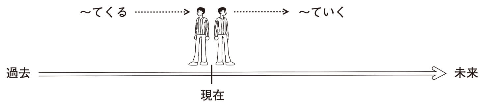
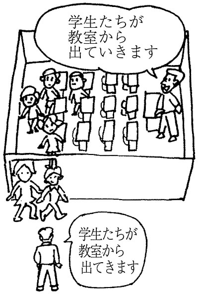
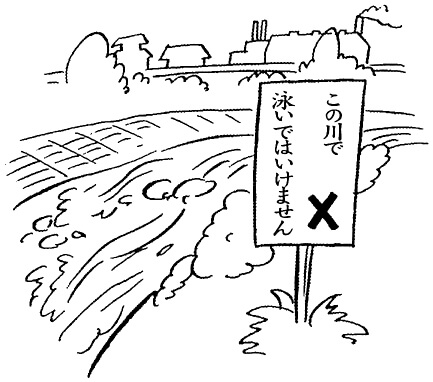

➡ って
then
❶ 朝はパンを食べて、コーヒーを飲みます。
❷ 3時にヤンさんが来て、4時にカンさんが来ました。
❸ 毎日、7時にうちを出て、６時ごろうちへ帰ります。
❹ わたしは昼は学校で勉強して、夜は英語学校で英語を教えています。
| 接続 | Ｖて |
|---|
動詞の「て形」（Vて）を使って、前の文と後ろの文を緩やかに結びつけている。 ❶ ❷ は並列、 ❸ ❹ は対比の意味になっている。
Loosely connects what precedes てform of verb to what follows. In sentences ❶ and ❷ the two clauses are in parallel. Sentences ❸ and ❹ stand in contrast.
then
❶ 電気を消して、部屋を出ます。
❷ Ａ駅まで電車で行って、B駅で乗りかえて、C駅で降ります。
❸ すみませんが、コピーを10枚取って、木村さんのところへ持っていってください。
❹ スーパーへ行って、たまごを買った。
❺ 田中君はいつもノックしないでわたしの部屋に入る。
| 接続 | Vて |
|---|
１）動詞の「て形」（Vて）を使って、前と後を緩やかに結びつけている。 ❶ ～ ❸ では動作の順番を表している。
２） ❹ ❺ は後の動作のために必要な前段階である。
３） ❷ のように「Vて」を二つ使うこともできる。
４）前後関係をはっきり言うときは「Vてから」を使う。
５）この使い方の否定形は「Vないで・Vずに」である。
１）Loosely links clauses preceding or following Vて. In sentences ❶ to ❸ , action is listed in sequence.
２）Vて in sentences ❹ and ❺ are prerequisites for action following.
３）Two Vて patterns can be used, as in sentence ❷ .
４）To express sequence relations more definitively, use Vてから.
５）Negative is Vないで or Vずに.
by; while
❶ CDを聞いて発音の練習をします。
❷ 女の子たちは芝生にすわって、話しています。
❸ 暑いので、子どもたちはふとんをかけないで寝ています
❹ こちらの名前と住所を書かないで手紙を出した。
| 接続 | Vて |
|---|
１）動詞の「て形」（Vて）によって、前後を緩やかに結びつけている。
２） ❶ は方法・手段を表し、 ❸ はどんな状態で動作をするか、どんなことが起こるかを表している。
３）この意味での否定は「Vないで・Vずに」である。
１）Loosely connects what precedes and follows it.
２）Sentence ❶ describes method and means; sentence ❸ describes what happens or what action occurs in what state.
３） Negative is Vないで or Vずに.
for; because
❶ 用事があって会には参加できません。
❷ 遅くなって、すみません。
❸ 手伝ってくれて、ありがとう。
❹ 田中さんの声は小さくてよく聞こえません。
❺ 母のことが心配で眠れなかった。
❻ 台風で木が倒れた。
❼歯が痛かったので、ご飯が食べられなくて困った。
| 接続 | Vて／イAくて／ナAで／Nで |
|---|
１）理由・原因の意味を表す。「から・ので」よりその意味は弱い。
２）後の文には「困る・大変だ・疲れた」などの心的、身体的な状態や不可能を表す表現を使うことが多い。
３）文末に話す人の意志や相手への働きかけを表す文は来ない。
◆ × 暑くて、窓をあけましょう。
→○暑いから、窓をあけましょう。
４） ❷ ❸ のように、あいさつとして慣用的に使う。
５）この使い方の場合、否定の形は「なくて」である。
both; and
❶ 新幹線は速くて、安全です。
❷ この部屋は広くて、明るい。
❸ 昨夜は暑くて、寝られなかった。
❹ 山崎さんは親切で、やさしい人です。
❺ （10年ぶりに会った人に）あなたが元気で、ほんとうによかった。
❻ 林さんは中国人で、林さんは日本人です。
| 接続 | イAくて／ナAで／Nで |
|---|
１）イ形容詞、ナ形容詞、名詞の「て」の形、「で」の形によって、緩やかにつながれた文である。
２）前後の言葉によっていろいろな意味になる。 ❶ ❷ ❹ は重ね、 ❸ ❺ は意味の弱い原因、 ❻ は対比になっている。
１）Loosely connects イ-adjectives or ナ-adjectives and nouns.
２）Meaning differs depending on what precedes or follows. Sentences ❶ , ❷ , and ❹ are in tandem; sentences ❸ and ❺ show weak cause; sentence ❻ shows contrast.
➡ て
give; do for; be kind and
❶ パーティーの後、中山さんは春子さんを家まで送ってあげました。
❷ 山田さんは林さんにいいアルバイトを紹介してあげたそうです。
❸ 先生がとても忙しそうだったので、わたしたちは先生の食事を作ってさしあげました。
❹ きのう、林さんのおばあさまが大きい荷物を持っていらっしゃったので、持ってさしあげました。
❺ わたしは毎日犬を散歩に連れていってやります。
❻ A：林さんは、夜、お子さんたちに本を読んであげますか。
| 接続 | Ｖて＋あげる |
|---|
１）相手のために親切な行為をすることを表す言い方。親切な行為をする人は「わたし」、または行為を受ける人より心理的に「わたし」に近い人である。
◆ × メリーさん（＝親切な行為をする人）はわたしの妹に英語を教えてあげました。
→○兄（＝親切な行為をする人）はメリーさんに折り紙を教えてあげました。
２）自分の行為を「Vてあげる」で言うと、自分の親切な心を強調するような感じになってしまうことがある。仕事の上の当然の行為には使わない。会話の相手が目上の人の場合もあまり使わない方がいい。
◆ × 案内係：では、お部屋に案内してあげます。お荷物を持ってあげましょう。／
× 先生、わたしの両親の写真を見せてさしあげますよ。
３）動詞によって助詞の使い方が違うから注意すること。
◆ 子どもを助けてあげます。／
森さんにかさを貸してあげます。／
花子さんの荷物を持ってあげます。／
子どもに歌を歌ってあげます。
４）「Vてさしあげる」は、 ❸ ❹ のように行為を受ける人が目上の場合に使う。「Vてやる」は、 ❺ のように動植物などの場合に使う。また、 ❻ のように、自分の家族に対してすることを、家族以外の人に話すときにも使う。
参照︰あげる
１）Acts of kindness. Person doing the kindness is speaker or someone psychologically closer to speaker than person receiving the act of kindness.
◆ × メリーさん（＝親切な行為をする人）はわたしの妹に英語を教えてあげました。
→○兄（＝親切な行為をする人）はメリーさんに折り紙を教えてあげました。
２）If Vてあげる is used for speaker, speaker's kindness becomes overly emphasized. Not used for situations that call for actions as part of the job. Best not to use toward social superiors.
◆ × 案内係：では、お部屋に案内してあげます。お荷物を持ってあげましょう。／
× 先生、わたしの両親の写真を見せてさしあげますよ。
３）Note that the particles change depending on the verb.
◆ 子どもを助けてあげます。／
森さんにかさを貸してあげます。／
花子さんの荷物を持ってあげます。／
子どもに歌を歌ってあげます。
４）Vてさしあげる is used when social superiors are recipients of action, as in sentences ❸ and ❹ . Vてやる is used for animals and plants, as in sentence ❺ . Vてやる is also used about one's own family to people outside the family, as in sentence ❻ .
is; are…
❶ Ａ：これ、見てください。わたしの部屋の写真です。
Ｂ：へえ。机の上に人形がたくさんかざってありますね。あ、テレビの上にも人形が置いてありますね。
❷ リンさんの持ち物には、みんなリンさんの名前が書いてあります。
❸ 駅のかべに、いろいろなポスターがはってある。
❹ Ａ：お迎えに来ました。門の前にわたしの車を止めてありますから、すぐに出発できます。
❺ Ａ：旅行は来週ですよね。準備はもうしてありますか。
❻ わたしはもう夏休みの計画表を作ってあります。
| 接続 | Ｖて＋ある |
|---|
「Ｖ（他動詞）＋てある」の形で、人が何かの目的を持って行った行為の結果が残っているという状態を表す。 ❶ ～ ❸ のように、目で見た様子を表すときには、「ＮがＶてある」という形を使う。 ❹ ～ ❻ のように直接目で見たことではなく、準備が整った状態を言いたいときには、「ＮをＶてある」という形になることが多い。この場合、人が主語になるが、省略されることが多い。
Verb is transitive. Result of action taken by someone with an objective continues. As in sentences ❶ to ❸ , when expressing some situation witnessed, N が Vてある is used. In sentences ❹ to ❻ , when event is not directly witnessed but preparations are already in place for a situation, N を Vてある is often used. In those cases, people become the subjects, but are often omitted.
～でも
regardless of
❶ 命令されたことが何であれ、きちんと最後までやらなければならない。
❷ たとえ相手が大臣であれ、一市民であれ、自分の意見をはっきり言うべきだ。
❸ どんな国であろうと、教育を重視しない国は発展しない。
| 接続 | N＋であれ | F | W |
|---|
１）「～であれ」の形で、「～に関係なく」という意味で使う。後の文には「事態は同じだ」という意味の文が来る。話者の主観的判断や推量を表す文が来ることが多い。
２） ❷ のように「N1であれN2であれ」の形もある。「たとえ～であれ・疑問詞～であれ」の形で使うことが多い。
１）"No relationship to." Clause following signifies situation stays same regardless of what is listed in preceding clause. Often speaker's subjective judgment or conjecture follows.
２）As in sentence ❷ , variation N1 であれ N2 であれ is used. Patterns たとえ～であれ, and interrogative～であれ are also common.
～でも～でも
whether it is…or…
❶ 着るものであれ食べるものであれ、むだな買い物はやめたいものです。
❷ 物理学であれ化学であれ、この国は基礎研究が遅れている。
❸ 学校教育であれ家庭教育であれ、長い目で子どもの将来を考えた方がいい。
❹ 論文を書くのであれ、研究発表をするのであれ、十分なデータが必要だ。
| 接続 | N＋であれ＋N＋であれ | F | W |
|---|
１）「～でも～でも」と例をいくつかあげて「その全部に当てはまる」と言いたいときに使う。
２）同様の意味を持つ「にしても～にしても・にしろ～にしろ・にせよ～にせよ」よりも硬い言い方。
１）Judgment applies to all examples listed.
２）More formal than expressions of same meaning, such asにしても～にしても, にしろ～にしろ, and にせよ～にせよ.
➡ であれ
➡ てくる
➡ てもらう
not yet
❶ どこの大学を受けるかまだ決めていません。
❷ Ａ：もう４時になりましたか。
❸ Ａ：もう朝ご飯を食べた？
| 接続 | Ｖて＋いない |
|---|
１）当然そうなるはずのことがまだ未完了だという意味。完了していない結果がその後（現在）の状態に影響を及ぼしている場合に使う。単純な過去のことについて話す場合は過去形を使う。
◆ Ａ：きのう朝ご飯を食べましたか。
Ｂ： × いいえ、食べていません。
→○いいえ、食べませんでした。
２） ❸ のようにくだけた会話では「Vていない」が「Vてない」になる。
１）Something should have been completed but is not yet. Used when incomplete result affects present situation. Past tense is used when speaking about simple past.
◆ Ａ：きのう朝ご飯を食べましたか。
Ｂ： × いいえ、食べていません。
→○いいえ、食べませんでした。
２）In informal speech, Vていない becomes Vてない, as in sentence ❸ .
～してから、今までずっと
ever since
❶ 大学を卒業して以来、田中さんには１度も会っていません。
❷ 一人暮らしを始めて以来、ずっと外食が続いている。
❸ あの画家の絵を見て以来、あの画家にすっかり夢中になっています。
❹ 来日以来、父の友人のお宅にホームステイしています。
| 接続 | Vて／する動詞のN＋以来 |
|---|
１）「ある行動の後、ある状態がずっと続いている」という意味。
２）「てからは」とほとんど同じ意味。
３）後の行動が１回限りのことには使えない。
◆ × 退院して以来、山に出かけました。
→○退院して以来、家で静かに暮らしています。
参照︰てからは
１）Certain state continues after action is completed.
２）Nearly same meaning as てからは.
３）Not used when later action occurs only once.
is -ing
❶ 父は部屋で新聞を読んでいます。
❷ わたしが家に帰ってきたとき、子どもたちは庭で遊んでいました。
❸ （テレビのニュース）北海道では雪が降っています。
❹ 冷たい風が吹いています。
❺ わたし、ここで待ってるわ。
| 接続 | Ｖて＋いる |
|---|
１）動作や作用が進行中・継続中であることを表す。動詞は継続動詞を使う。 ❸ ❹ のように自然現象を表すのにも使う。
２）くだけた会話では「Vている」が「Vてる」になる。
１）Progression or continuation of action or operation. Verbs of continuation are used. Also used as in sentences ❸ and ❹ for natural phenomena.
２）In informal speech Vている becomes Vてる.
always
❶ わたしは毎年富士山に登っています。
❷ この道ではよく交通事故が起きているから気をつけてください。
❸ 父は昨年から仕事で毎月１回中国へ行ってるんです。
❹ 山田さんはタイの大学で日本語を教えています。
❺ 弟はドイツの大学でヨーロッパの歴史を勉強しています。
❻ 林さんは貿易会社の社長をしている。
| 接続 | Ｖて＋いる |
|---|
１）習慣や行為の反復を表す。習慣・反復の意味の場合は ❷ のように瞬間動詞（瞬間的な動作・作用を表す動詞）も使える。 ❹ ～ ❻ は職業、身分などを表す。
２） ❸ のようにくだけた会話では「Vている」が「Vてる」になる。
１）Practice or repetition of action. For practice and repetition, verbs of momentary action or operation can also be used, as in sentence ❷ . Sentences ❹ to ❻ express occupation or position.
２）In informal speech, Vている becomes Vてる, as in sentence ❸ .
has been; is
❶ あ、この時計は止まっています。
❷ あ、かばんの口が開いていますよ。さいふが落ちますよ。
❸ 遠山さんは今フィリピンに行っています。マニラにいます。
❹ 田中さんは結婚しています。子どもが３人います。
❺ みちこさんは、白いスカートをはいて、白いぼうしをかぶっています。
❻ Ａ：あの、サングラスをかけている人はどなたですか。
❼あ、電気がついてるよ。部屋にだれかいるんだね。
| 接続 | Ｖて＋いる |
|---|
１）主体の変化の結果が残っている状態を表す。動詞は瞬間動詞（瞬間的な動作を表す動詞）を使う。 ❶ ❷ は、人が何かの目的を持ってそうしたのか、自然にそうなったのかに関係なく、ただ見える状況を言う場合に使う。 ❸ ❹ は行為の後の状態がそのまま続いていることを表す。 ❺ ❻ は「着脱を表す他動詞＋ている」で、服装を表す言い方。
２）名詞を説明するときは、 ❻ のように、「ＶているＮ」を「ＶたＮ」で置き換えることができる。動作の進行中であることを表す「Vている」にはこの使い方はない。
◆ めがねをかけている人（状態）
＝めがねをかけた人／
ピアノを弾いている人（進行中）
≠ピアノを弾いた人
３）くだけた会話では❼のように「Ｖている」が「Ｖてる」になる。
１）Result of change continues. Uses verbs of momentariness (verbs that express momentary action). In sentences ❶ and ❷ describes externally certain state, whether someone had a purpose in causing that state or it naturally came about. Sentences ❸ and ❹ show that action continues unabated. Sentences ❺ and ❻ describe clothing using transitive verb for clothing + ている.
２）When explaining nouns, Vている N can be replaced with Vた N, as in sentence ❻ . Forms Vている N and Vた N are interchangeable. Forms V ているN and V たN are interchangeable, but not for action in progress.
◆ めがねをかけている人（状態）＝めがねをかけた人／
ピアノを弾いている人（進行中）≠ピアノを弾いた人
３）In informal speech, Vている becomes Vてる, as in sentence ❼.
-s, -ing
❶ 弟は父によく似ています。
❷ 500メートルぐらい行くと、この道は少し左に曲がっています。
❸ この道は海の方まで続いています。
| 接続 | Ｖて＋いる |
|---|
もともとの形状、性質などを表す。ほかに「優れている・面している」などがある。
Original shape or essence of something. Other expressions include: 優れている and 面している.
過去に～した
narrative present tense
❶ アポロ11号は1969年に月に着陸している。
❷ モーツァルトは12歳のときに、オペラを作曲している。
❸ わたしは３歳のときにこの病気（はしか）にかかっているから、もうかかることはない。
| 接続 | Ｖて＋いる |
|---|
歴史的な事柄、経歴・経験などを述べる言い方。
Describes historical events, careers, or experience.
➡ ところだ
in advance; leave
❶ Ａ：山田君、コピー用紙がないから、買っておいてください。
❷ 引っ越しは9月の初めだから、夏休みに国へ帰る前に準備をしておこうと思います。
❸ Ａ：窓を閉めましょうか。
❹ Ａ：この箱、どうしましょうか。
| 接続 | Ｖて＋おく |
|---|
１）何かの目的のために、その準備としてある行為をするという意味を表す。意志動詞につく。また、 ❸ ❹ のように、一時的な処置を表す言い方もある。
２） ❹ のように、話し言葉では「Ｖておく→Ｖとく」となる。
参照︰ないでおく
１）Preparation is done for an action to achieve some purpose. Appends to verbs of volition. Also applies to temporary measures, such as in sentences ❸ and ❹ .
２）In speech, Vておく becomes Vとく.
after
❶ この仕事をぜんぶやってからビールを飲みます。
❷ 新しい家を買うときは、よく調べてから買いましょう。
❸ 先にお金を払ってから、３番の窓口に行ってください。
❹ バスが止まってから席を立ってください。
❺ みんなが帰ってから、そうじをしよう。
| 接続 | Ｖて＋から |
|---|
１）「Ｖてから…」の形で、「Ｖて」の行為を先に、または必ずする、ということを強調する言い方。前後関係がはっきり決まっていることについては使わない。
◆ × ドアを開けてから、外に出た。
→○ドアを開けて、外に出た。
２）後には状態を表す文ではなく、動作を表す動詞が来る。
◆ × みんなが帰ってから、ごみがいっぱいだった。
３）一つの文の中で「Vてから」を２度以上使うことはできない。
１）Emphasizes that Vて action will definitely be done first. Not used for explicit time relationships.
◆ × ドアを開けてから、外に出た。
→○ドアを開けて、外に出た。
２）Verbs expressing action rather than state of being follow.
◆ × みんなが帰ってから、ごみがいっぱいだった。
３）More than one Vてから cannot be used in a sentence.
since
❶ わたしが日本に来てから、もう４年たちました。
❷ 林さんがこの会社に入ってきてから、会社の中が明るくなりました。
❸ たばこをやめてから、体重が急に増えた。
❹ 赤ちゃんが生まれてから、わたしは毎日とても忙しいです。
| 接続 | Ｖて＋から |
|---|
「Ｖてから…」の形で「Ｖて」はある変化や、継続的なことの起点を表す。後には事態の変化、または継続している状態を表す文が来る。
A starting point from which change or continuation occurs. Change or continuation of a condition follows.
～した後でなければ
not until after
❶ 野菜を生で食べるなら、よく洗ってからでないと、農薬が心配だ。
❷ 木村教授には前もって電話してからでないと、お会いできないかもしれません。
❸ そのことについては、よく調査してからでなければ、責任ある説明はできない。
❹ 田中さんは出張中だから、来週からでないと出社しません。
| 接続 | Vて＋からでないと |
|---|
１）「あることをした後でなければだめだから、まずそうすることが必要だ」という意味。後には、困難や不可能の意味の文が来る。
２）普通は動詞のて形に続くが、 ❹ のように、時間を表す言葉に直接つく場合もある。
３） ❸ の「てからでなければ」も意味・用法は同じである。
１）Something must be done first before something else can be done. Phrases showing difficulty or impossibility follow.
２）Usually follows the て form of the verb, but can also append directly to words expressing time, as in sentence ❹ .
３）In sentence ❸ , てからでなければ also has same meaning and usage.
➡ てからでないと
～してから、今までずっと
from the time…
❶ たばこを止めてからというもの、食欲が出て体の調子がとてもいい。
❷ あの本を読んでからというものは、どう生きるべきかについて考えない日はない。
❸ 円高の問題は深刻だ。今年になってからというもの、円高傾向は進む一方だ。
| 接続 | Vて＋からというもの | W |
|---|
１）「その行為やできごとが後の状態の契機になって」という意味を表す。以後の変化が大きいことに対して話者が心情を込めて言う。
２）「てからは」と意味･用法がだいたい同じであるが、「というもの」があるために、より詠嘆的になっている。
参照︰てからは
１）Something creates a chance for a situation after some action or event. Speaker expresses emotions about a dramatic change that occurs later.
２）Meaning and usage of てからは is nearly the same, but addition of というもの makes the phrase exclamatory.
～してから、今までずっと
ever since
❶ 先月、禁煙してからは、１度もたばこを吸っていません。
❷ ２年前に社会人になってからは、ひまな時間はほとんどありません。
❸ 毎日飲んでいた薬を止めてからは、かえって食欲も出て元気に過ごしています。
❹ 就職してからは、旅行に行くチャンスがありません。
| 接続 | Vて＋からは |
|---|
１）「ある行動の後、ある状態がずっと続いている」と言いたいときに使う。
２）「ていらい」とほとんど同じ意味。
３）「てから」と違って、１回限りのことには使えない。
◆ × 就職してからは、外国旅行に行きました。
→○就職してから、外国旅行に行きました。
１）A condition has continued since advent of certain action.
２）Nearly same meaning as ていらい.
３）Unlike てから, cannot be used for independent events.
➡ ことができる
please do…
❶ あのう、もう少しゆっくり言ってください。
❷ 疲れたでしょう。ここでどうぞゆっくり休んでください。
❸ ここに名前を書いて、事務所に出してください。
❹ （教室で）キムさん、15ページを読んでください。
❺ （立て札）ここにごみを捨てないでください。
❻ すみません、そこに荷物を置かないでください。
❼（カラオケで）ぼくは歌がへただけど、笑わないでくださいね。
❽ご用のない方は、ここに車を止めないでください。
| 接続 | Ｖて／Vないで＋ください |
|---|
１） ❶ ～ ❹ は、人に依頼したり、勧めたり、軽く指示したりする言い方｡
２） ❺ ～❽は、禁止したり、人に何かをしないように頼む言い方。
１）In sentences ❶ to ❹ , てください is used to ask favors, make recommendations, or casually instruct someone.
２）In sentences ❺ to ❽, is used to ask someone to refrain from something or prohibit them from doing something.
won't you…?
❶ 上田さん、ちょっとこの文をチェックしてくださいませんか。
❷ ちょっとテレビの音を小さくしてくださいませんか。
❸ すみません、課長に会議の予定を伝えてくださいませんか。
❹ 出入り口ですから、ここに自転車を置かないでくださいませんか。
| 接続 | Vて／Vないで＋くださいませんか |
|---|
「てください」より丁寧な依頼や指示の言い方。
More polite form of request and directive than てください.
➡ てくれる
go and
❶ えっ、もうお茶の時間ですか。じゃ、ちょっと手を洗ってきます。
❷ もう12時ですね。じゃあ、わたしはお弁当を持っていないので、あそこの食堂で食べてきます。
❸ あっ、コーヒー豆がない。ちょっと待っていてください。すぐ近くの店で買ってきますから。
| 接続 | Ｖて＋くる |
|---|
ちょっとした目的のために一時的にその場を離れることを表す。この使い方には「Vていく」の形はない。
Describes leaving somewhere for temporary time for trivial purpose. No Vていく form of this pattern.
first, then
❶ 森さん、あした、ここへ来るとき駅で地図をもらってきてください。
❷ （会社で）あしたは市役所に寄ってきますから、１時間ぐらい遅くなります。
❸ 中国へ行く前に中国語を勉強していきます。
❹ 病院へ行く途中で、お見舞いの花を買っていきましょう。
| 接続 | Ｖて＋くる Vて＋いく |
|---|
ある地点で何かをして、それから移動することを表す。
Do something somewhere and then move on.
has become
❶ 日本語の授業はだんだん難しくなってきました。
❷ 寒くなって風邪をひく人が増えてきた。
❸ 日本の生活にだいぶ慣れてきました。
❹ （天気予報）今夜から風と雨がだんだん強くなっていくでしょう。
❺ 日本では子どもの数がだんだん減っていくだろうと言われています。
❻ 新しい駅ができたので、この町の人々の生活は少しずつ変わっていくだろう。
| 接続 | Ｖて＋くる Vて＋いく |
|---|
１）「Vてくる」は、過去から現在（話す人の見ている時点）まで変わりつづけていることを表す。「Vていく」は、現在（話す人の見ている時点）から未来に向かって変わりつづけることを表す。
２）変化を表す動詞といっしょに使う。
１）Vてくる describes situation continually changing from past to present (speaker's point of view). Vていく is for action that will continue to change from present (speaker's point of view) to future.
２）Used with verbs that express change.
have…; will continue
❶ 森さんは若いころからずっと、カメラの仕事をしてきました。
❷ 今まで都会で生活してきました。これからはいなかで暮らします。
❸ これからもこの仕事を続けていくつもりです。
❹ 今日まで一人でがんばってきました。これからはあなたといっしょになかよくやっていきましょう。
| 接続 | Ｖて＋くる Vて＋いく |
|---|
１）時間的継続を表す。
２）「Vてきた」は過去から現在まで続いていること、「Vていく」は現在から未来へ続くことを表す。話す人の視点は現在、またある一定の時にある。よく「今まで・これから」などの言葉とともに使う。
１）Describes temporal continuation.
２）Vてきた is present perfect tense; Vていく is for continuation from present to future. Speaker's focus is on present or specified time. Often used with 今まで and これから.
state of movement
❶ 飛行機の中で眠ってきました。
❷ あしたは、お弁当を持ってきてください。
❸ 荷物が多いから、タクシーに乗っていきましょう。
❹ 日曜日に弟を動物園へ連れていきました。
| 接続 | Ｖて＋くる Vて＋いく |
|---|
移動する手段・状態、移動のときに並行して行うことを表す。
Means of movement, situations, and actions occurring in tandem during motion.
to; into
❶ ほら、マリがこちらの方へ走ってきますよ。
❷ この川は富士山からこの町へ流れてくるのです。
❸ 美しい女の人がとなりの部屋に引っ越してきました。
❹ ジムが話し始めると、みんながジムのところへ集まってきました。
❺ 秋になると、夏の鳥は南の国へ飛んでいきます。
❻ わたしが大きな声を出したので、犬は驚いて逃げていきました。
| 接続 | Ｖて＋くる Vて＋いく |
|---|
１）移動動詞や移動の意味を持つ動詞に方向性を与え、話者や話題にしている人への接近、離反を表す。
２）移動動詞は「歩く・走る・通る・飛ぶ・流れる」など。単独では方向性がないので、方向を示したい場合には「Vてくる・Vていく」の形で使う。
１）For leaving or approaching speaker or topic by giving directionality to verbs of movement or verbs that have meaning of movement.
２）Verbs of movement include 歩く, 走る, 通る, 飛ぶ, and 流れる. These words have no intrinsic directionality, so Vてくる or Vていくare appended for directionality.
approaching or leaving the speaker
❶ 授業が終わって、学生たちが教室から出てきます。
❷ 授業が始まって、学生たちが教室に入っていきます。
❸ 授業が始まって、学生たちが教室に入ってきます。
❹ 授業が終わって、学生たちが教室から出ていきます。
❺ （電車の中で）電車が駅に着くと、遠足に行く子どもたちがおおぜい乗ってきました。
| 接続 | Ｖて＋くる Ｖて＋いく |
|---|
１）移動の意味を持つ、対の動詞について、話す人への接近、離反を表す。
２）話す人の視点の位置によって「ていく・てくる」が変わる。話す人は ❶ ❷ では教室の外にいる。 ❸ ❹ では教室の中にいる。移動の意味を持つ、対の動詞とは「入る・出る、上がる・下りる、上る・下る、乗る・降りる」など。
１）For leaving or approaching speaker for verb pairs of motion.
２）Use of ていく or てくる depends on speaker's point of view. In sentences ❶ and ❷ , speaker is outside classroom. In sentences ❸ and ❹ , is in classroom. Verb pairs of motion include 入る, 出る, 上がる, 下りる, のぼる, くだる, 乗る, 降りる, etc.
come to
❶ となりの部屋から何かいいにおいがしてきます。
❷ 小学校が近いので、いつも子どもたちの元気な声が聞こえてきます。
❸ 九州にいる妹がみかんを送ってきた。
❹ きょうもユキのところにイタリアから電話がかかってきました。
| 接続 | Ｖて＋くる |
|---|
１）ものや感覚（におい、声など）が話者に接近することを表す。
２）この使い方に「Vていく」の形はない。
１）Things or sensations (odors, voices, etc.) approach speaker.
２）No Vていく form of this usage.
start to
❶ あ、またおなかが痛くなってきた。
❷ あーあ、眠くなってきた。
❸ 寒いと思ったら、ほら、雪が降ってきましたよ。
| 接続 | Ｖて＋くる |
|---|
１）変化の出現、開始を表す。
２）話す人の意志とは関係なく、自然発生的に起こることに使う。心理的、感覚的現象の体感がある場合が多い。「Vていく」の形はない。
１）Beginning or emergence of change.
２）Used with natural occurrences regardless of speaker's volition. Often used for psychological or emotive sensations. No Vていく form.
does for (me)
❶ よう子さんはとても親切で、わたしが困っているといつも助けてくれます。
❷ 町田さんはクラス会の時間が変わったことを、わたしたちに知らせてくれませんでした。
❸ 中川さんはわたしの壊れたパソコンを直してくれました。
❹ 今日わたしは学校を休んだ。午後リーさんがお見舞いに来てくれた。
❺ 山田先生はわたしの話をよく聞いてくださいました。そして静かな声でいろいろなことを話してくださいました。
| 接続 | Ｖて＋くれる |
|---|
１）「わたし」または心理的に「わたし」に近い人がほかの人の行為をうれしい、ありがたいと感じたときの言い方。ありがたくないと感じたときは受け身の文で表す。
２）行為の方向を示したいときにも、この言い方を使う。
◆ カンさんが写真を見せました。（だれに見せたかわからない）／
カンさんが写真を見せてくれました。（わたしに見せたことがわかる）
３）助詞の使い方（わたしを わたしに～を わたしの～を）に注意。
４）「Ｖてくださる」は ❺ のように行為をする人が目上の場合に使う。
参照︰くれる
１）Feeling of happiness or gratitude by speaker or someone psychologically close to speaker about another's action. When not for gratitude, passive is used.
２）Also used to describe direction of action.
◆ カンさんが写真を見せました。（だれに見せたかわからない）／
カンさんが写真を見せてくれました。（わたしに見せたことがわかる）
３）Note use of particles such as わたしを, わたしに～を, わたしの～を.
４）Vてくださるused toward social superiors who do ac-tion, as in sentence ❺ .
～が実現することによって
it's only when; by
❶ 試合に勝ってこそ、プロのスポーツ選手と言える。
❷ スポーツでもゲームでも自分でやってこそ、そのおもしろさがわかる。
❸ 野の花は自然の中にあってこそ、美しい。
| 接続 | Vて＋こそ |
|---|
「～てこそ、…」の形で、「～してはじめて、何かがわかる。何かになれる」と言いたいときに使う。「～しなければ／～するまでは、わからない」という意味になる。「…」にはプラスに評価する言葉、可能の言葉をよく使う。
Learn or become something for first time only by doing something. If hadn't tried something, wouldn't have known about it. Often positive evaluations and possibilities follow.
➡ さえ
➡ てあげる
非常に～だ
extremely
❶ いよいよあした帰国できるかと思うと、うれしくてしかたがありません。
❷ 毎日会社に行って、人に会うのがいやでしかたがない。
❸ 朝から寒気がしてしかたがない。熱が出るのかもしれない。
❹ 体の調子が悪いときは、周りの人たちがうるさく思えてしかたがない。
| 接続 | Ｖて／イＡくて／ナＡで＋しかたがない |
|---|
１）ある感情や体の感覚が起こってその状態が「強くて抑えられない」というときに使う。
２）話者の感情・体の感覚・欲求などを表す言い方であるから、３人称に使うときは文末に「ようだ・らしい・のだ」をつける必要がある。
３） ❹ のように「思える・泣ける」などの自発を表す動詞とともに使える。
４）「てしょうがない」は話し言葉。
参照︰てしょうがない
１）Speaker cannot repress strong emotions or sensations.
２）Necessary to add to end of sentence ようだ, らしい, or のだ for the third person because only describes speaker's feelings, bodily sensations, or demands.
３）Can also be used with reflexive verbs such as 思える, or 泣ける.
４）てしょうがない is spoken form.
➡ てしかたがない
do the whole thing; end up
❶ Ａ：あの本、読み終わりましたか。
❷ そうじやせんたくなどの家事は、いつも土曜日にやってしまいます。そして、土曜日の夜や日曜日はゆっくりします。
❸ Ａ：ミーティング、始まるんですか。
❹ この仕事はもっと時間がかかると思いましたが、30分でできてしまいました。
❺ Ａ：そろそろ出かけようか。
| 接続 | Ｖて＋しまう |
|---|
１）「全部、完全に、早く」…を済ませる（済ませた）ということを特に心理的に強調したいときに使う。強調する必要がないときに使うと不自然である。
◆ × もう東西大学に合格してしまいました。
→○東西大学に合格しました。／
× （説明を聞いた後で）もうわかってしまいました。
→○わかりました。
２） ❸ のように、未来のことにも使える。
３） ❹ のように、話す人の意外な気持ちを表すときにも使う。
４）話し言葉では ❺ のように、「Ｖてしまう→Ｖちゃう」となる。
１）Emphasizes psychologically total and quick completion. When emphasis is not necessary sounds forced.
◆ × もう東西大学に合格してしまいました。
→○東西大学に合格しました。／
× （説明を聞いた後で）もうわかってしまいました。
→○わかりました。
２）Can be used for future, as in sentence ❸ .
３）Used for surprise on speaker's part, as in sentence ❹ .
４）In spoken language, Vてしまう becomes Vちゃう, as in sentence ❺ .
ended up
❶ Ａ：けさは遅かったですね。
❷ 買ったばかりの時計が壊れてしまった。
❸ 銀行のカードをなくしてしまって、困っています。
❹ ライトをつけないで自転車に乗っていたので、警官に注意されてしまいました。
❺ かぎをそんなところに置いておくと、また忘れちゃうよ。かばんの中に入れなさい。
❻ 今日もまた、お酒を飲んじゃった。今週は飲み過ぎた。
| 接続 | Ｖて＋しまう |
|---|
１）話す人の「失敗した・残念だ・困った」などという気持ちを表す。
２） ❺ のように、未来のことにも使える。
３）話し言葉では ❺ ❻ のように、「Ｖてしまう→Ｖちゃう」となる。
１）Speaker's feelings of failure, regret, vexation.
２）Can also be used for future, as in sentence ❺ .
３）In speech, Vてしまう becomes Vちゃう as in sentences ❺ and ❻ .
don't you think?
❶ A：このセーター、わたしが編んだんです。いい色でしょう。
B：ほんとうにきれいですね。
❷ A：これ、いいだろう。きのう買ったんだ。
B：うん、いいバイクだね。ぼくにも貸してよ。
❸ A：ただいま。
B：おかえりなさい。外は寒かったでしょう。
❹ 子ども：お父さん、はさみはどこ？
❺ A：あした、お茶の会があるでしょう。あなたは出席しますか？
| 接続 | 〔普通形〕（ナA／N）＋でしょう |
|---|
１） ❶ ❷ のように、自分の側のものについて相手に同意を求めたり、 ❸ のように、相手の気持ちや状況を思いやって同情したりするときの言い方。 ❹ ❺ のように、相手に確認する場合にも使われる。 ❺ のように会話を始めるきっかけの言葉として使われることもある。
２）「だろう」は主として男性が親しい相手に話すときに使う。
１）As in sentences ❶ and ❷ , used to seek agreement for speaker's opinion, or as in sentence ❸ to express sympathy for listener's feelings or situation. Also used for verification from listener, as in sentences ❹ and ❺ . Can be used to start a conversation, as in sentence ❺ .
２）The copula だろう is mainly used in familiar male speech.
➡ だろう
非常に～だ
extremely
❶ 小さいノートパソコンを使い始めたためか、このごろ目が疲れてしょうがない。
❷ 姉からの手紙によると母が病気だそうだ。母の苦労を思うと、泣けてしょうがない。
❸ 彼がどうして突然サッカー部をやめたのか、わたしは気になってしょうがない。
❹ 朝寝坊をしたために入学試験に間に合わなかった。残念でしょうがない。
| 接続 | Ｖて／イＡくて／ナＡで＋しょうがない |
|---|
１）ある感情や体の感覚が起こってその状態が「強くて抑えられない」というときに使う。
２）話者の感情・体の感覚・欲求などを表す言い方だから、３人称に使うときは文末に「ようだ・らしい・のだ」をつける必要がある。
３） ❷ のように「思える・泣ける」などの自発を表す言葉とともに使える。
４）「てしかたがない」のくだけた話し言葉
参照︰てしかたがない
１）Speaker cannot repress strong emotions or sensations.
２）Necessary to add to end of sentence ようだ, らしい, or のだ for the third person because only describes speaker's feelings, bodily sensations, or demands.
３）Can also be used with reflexive verbs such as 思える, or 泣ける.
４）てしょうがない is spoken form.
➡ すら〈強調〉
非常に～、我慢できないほど～
be dying to; unbearably
❶ 風邪薬を飲んだから、眠くてたまらない。
❷ 試験のことが心配でたまらず、夜もよく眠れない。
❸ 若いころは親元を離れたくてたまらなかったが、今は親のことがとても懐かしい。
❹ どうしたんだろう。今日は朝からのどが渇いてたまらない。何か飲みたくてたまらない。
| 接続 | Ｖて／イＡくて／ナＡで＋たまらない |
|---|
１）ある感情や体の感覚が起こってその状態が「強くて抑えられない」というときに使う。
２）話者の感情・体感・欲求を表すときに使う。３人称に使うときは文末に「ようだ・らしい・のだ」をつける必要がある。
３）自発を表す言葉「思える・泣ける」などといっしょには使えない。
◆ × 病気の母のことを思うと泣けてたまらない。
→○病気の母のことを思うと泣けてならない。
１）Inability to repress strong feelings or physical sensations.
２）Describes speaker's feelings, physical senses, or desires. For the third person, must append ようだ, らしい, or のだ to sentence ending.
３）Cannot be used with reflexive verbs such as 思える or 泣ける．
～のような手段をとってでも
even if have to
❶ わたしが演劇をすることに父は反対をしている。しかし、わたしは父と縁を切ってでも、やりたい。
❷ 駆け落ちしてでも、わたしは彼女と結婚する。
❸ 交通事故で足を折って出演できなかったが、わたしはこの舞台だけははってでも行きたかった。
| 接続 | Vて＋でも |
|---|
したい気持ちが強いことや希望を実現するために、極端な強い手段をとることもちゅうちょしないという強い決意を表すときの表現。後の文にはふつう、やりたいこと、希望などを表す文が来る。
Extreme determination to realize some strong feeling or desire even if must take extreme measures. Sentence endings expressing speaker's desires or hopes are common.
➡ ていない
これこそ～そのものだ
if this isn’t…, then what is it?
❶ 彼は体の弱い妻のために空気のきれいな所へ引っ越すことを考えているようだ。これが愛でなくてなんだろう。
❷ 親鳥は北の国へ帰る日が来てもけがをした子鳥のそばを離れようとはしなかった。これが親子の情愛でなくてなんだろう。
❸ 上田氏はぜいたくはせず、つねに人々のためを考えていた。これが指導者の姿勢でなくてなんだろう。
| 接続 | Ｎ＋でなくてなんだろう | W |
|---|
抽象名詞を取り上げて、「これが～と言えるものだ」と感情を込めて言うときの表現。小説・随筆などに見られる書き言葉。
Expresses feeling by mentioning abstract noun and saying that it is …par excellence. Written form seen in novels, essays, etc.
抑えられないほど～
can't help but
❶ この写真を見ていると故郷の友だちのことが思い出されてなりません。
❷ 地球温暖化の問題を考えると、子どもたちの将来のことが気になってならない。
❸ 田中さんは今の収入でこれから家族４人が生活していけるのか、心配でならないようだ。
| 接続 | Vて／イAくて／ナAで＋ならない |
|---|
１）「自然にある感情や体の感覚が起こってきて抑えられない」というときに使う。
２）話者の感情・体感・欲求を表す言葉であるから、３人称に使うときは ❸ のように文末に「ようだ・らしい・のだ」をつける必要がある。
３）自発を表す言葉「思える・思い出される・泣ける」などとともに使って、マイナスの気持ちを表すことが多い。
１）Inability to repress emotions or physical sensations that naturally arise.
２）Expresses speaker's emotions, senses, and demands, so in the third person sentence endings must take ようだ, らしい, or のだ.
３）Used with reflexive verbs such as 思える, 思い出される, or 泣ける. Often expresses negative feelings.
何度も～して、～して
alternately did…and…
❶ 夫はさっきから味を見てはなべの中をかき回している。どんな料理ができるのだろうか。
❷ 正月は食べては寝、飲んでは寝の日を過ごしていた。
❸ 山田さんはパソコンのキーボードをたたいては考え、たたいては考えています。
❹ 石田さんは報告書を課長に出しちゃ直されてるよ。
| 接続 | Ｖては |
|---|
「ＶてはＶ」の形で二つの動作を繰り返し行う様子を表す。 ❸ の「ＶてはＶ、ＶてはＶ」のように２回繰り返して反復性を強調する使い方もある。 ❹ の「ちゃ」は口語。
In pattern VてはV, two actions are performed alternately. Also has usage of Vては V, Vては V to emphasize repetitiveness by stating action twice, as in sentence ❸ . Phrase ちゃ in sentence ❹ is colloquial．
➡ んじゃない
～ではないのだから
it's not as though
❶ 神様ではあるまいし、10年後のことなんかわたしにわかりませんよ。
❷ 子ども：この虫とこの虫はよく似ているけど、どこか違うのかなあ。
❸ 学生：先生、この申込書、どう書けばいいのですか。
| 接続 | Nでは＋あるまいし |
|---|
１）「Nではないのだから、当然…」と言いたいときの表現。後の文には、相手に対する話者の判断や、主張、話し相手への忠告、勧めなどが来る。
２）古い感じのする言葉であるが、会話的な表現である。公式な文章には使わない。
１）Since N is not true, it is only natural that…. What follows is speaker's judgment, assertion, advice, or recommendation for listener.
２）Though somewhat old-fashioned, is also conversational. Not used in formal writing.
(you) must not
❶ （立て札）ここは危険です。この川で泳いではいけません。
❷ 病院の中で携帯電話を使ってはいけません。
❸ 図書館の電気は暗くてはいけません。
❹ 証明書の写真はスピード写真ではいけませんか。
❺ 父：それ、さわっちゃいけないよ。
❻ 子どもはお酒を飲んじゃいけないんだよ。
| 接続 | Ｖては／イＡくては／ナＡでは／Ｎでは＋いけない |
|---|
１）禁止や規制を表す言い方。教師が生徒に対して、親が子に対して注意をしたり公のルールを示したりするときなどに言う。
２） ❹ の「てはいけませんか」は「てもいいですか」と同じように許可を求める言い方であるが、遠慮しながら聞く言い方である。
３）話し言葉では、 ❺ ❻ のように「ちゃいけない・じゃいけない」となる。
１）Prohibitions and rules used by teachers to admonish students, parents toward children, and in public rules.
２）The てはいけませんか in sentence ❹ is like てもいいですか in that asks permission, but has nuance of hesitation to ask.
３）In speech, becomes ちゃいけない,じゃいけない, as in sentences ❺ and ❻ .
～のはいやだ、困る
doesn't like; be vexed; be more than one can bear
❶ 課長にこう毎晩のように飲みに誘われてはかなわない。
❷ 辛い料理はきらいではないけど、こんなに辛くてはかなわない。
❸ 説明書がこんなに複雑ではかなわない。もっと易しい説明書はないかな。
❹ 毎日こう暑くちゃかなわないね。
❺ 毎日残業ばかりじゃかないませんよ。たまには早く帰りたいですよ。
| 接続 | Ｖては／イＡいくては／ナAでは／Nでは＋かなわない |
|---|
１）現時点での苦情、不満を言うときの表現。「こう・こんなに」などの言葉といっしょに現時点での状態を言うことが多い。その状態を「ては・では」で受けて、それは困るという意味の「かなわない」をつけた言い方。
２） ❹ ❺ のようにくだけた会話では「ては」は「ちゃ」、「では」は「じゃ」となる。
１）Complaint of current grievances and disappointments. Often used with こう or こんなに to describe present situation. The meaning of "distressing" of かなわないis appended using ては、ではfor situation.
２）In informal speech ては becomes ちゃ, and では becomes じゃ, as in sentences ❹ and ❺ .
➡ てはかなわない
～た後でようやく
it is/ was not until…that
❶ 入院してはじめて健康のありがたさがわかりました。
❷ スポーツは自分でやってみてはじめてそのおもしろさがわかるのです。
❸ 大きな仕事は十分な準備があってはじめて成功するのだ。
| 接続 | Vて＋はじめて |
|---|
「Ｖてはじめて…」の形で、あることをする前はそうではなかったが、した後、それがきっかけとなってやっと「…であること」がわかった、または「…」になるという意味。
After speaker does something, becomes an impetus that leads to realization or new development.
驚いたことに～
to (my) amazement
❶ 朝起きてみたら、何年も咲かなかった花が咲いているではないか。今日はきっと何かいいことがあると思った。
❷ いつもは頼りない５歳の子どもが、病気のわたしを一生懸命看病してくれるではないか。
❸ 彼の引っ越し先はなんと人口1,000人の小さな孤島ではないか。
❹ なんとこの犬はわたしの喜びや悲しみをみんなわかってくれるではありませんか。
| 接続 | 〔普通形〕（ナＡ／Ｎ）＋ではないか | W |
|---|
「～ではないか」の「～」で述べることを 驚き・感嘆・感動などの気持ちで表す言い方。小説やエッセーなどに使われる書き言葉。
What is described before ではないか indicates surprise, amazement, or impression. Written expression used in novels and essays.
～だと思う
it seems (to me)
❶ あの子はまだ子どもではないか。親はどうして彼を外で遊ばせないのだろう。
❷ 彼女はあなたのことをあんなに心配しているではありませんか。連絡してあげたらどうですか。
❸ 外は大雪じゃありませんか。こんな日に外出するのは危険ですよ。
❹ 勉強したくなければしなければいいじゃないか。自分のことは自分で判断しろ。
| 接続 | 〔普通形〕（ナＡ／Ｎ）＋ではないか |
|---|
１）「～ではないか」の形の「～」で自分の判断を言い、相手にその自分の判断への同意を求めたり、相手に反論したりするときに使う。
２）丁寧な言い方では ❷ のように「ではありませんか」、くだけた会話では ❹ のように「じゃないか」になる。
１）Speaker states her judgment before ではないかto seek agreement from listener with speaker's judgment or to disagree with listener.
２）In polite speech, becomes ではありませんか, as in sentence ❷ ; in informal speech becomes じゃないか, as in sentence ❹ .
want to happen or be done
❶ クラス会の予定が決まったら、すぐわたしに知らせてほしいのですが。よろしくお願いします。
❷ （手紙）毎日、寒い日が続いています。早く暖かくなってほしいですね。
❸ このことはほかの人には言わないでほしいのです。
❹ 子どもには漫画ばかり読むような大人になってほしくない。
❺ 姉：この部屋、ずいぶん汚いね。
| 接続 | Vて・Vないで＋ほしい |
|---|
１）話す人が相手やほかの人、ものごとに対して要望や希望がある場合に使う。
２）否定には「Vないでほしい」と「Vてほしくない」の二つの形がある。
３）「Vないでほしい」は ❸ のように「Vないでください」の意味で使うことが多い。
４）「Vてほしくない」は ❹ のように相手と関係なく自分の要望や希望を述べるだけの場合にも使う。また、 ❺ のように、相手を非難するときにも使う。
１）Speaker has expectation or desire of listener, third party, or thing.
２）Two forms of negation: Vないでほしい and Vてほしくない.
３）Vないでほしい often means Vないでください, as in sentence ❸ .
４）Vてほしくない is also used to state speaker's expectation or wishes independent of listener, as in sentence ❹ . Also used to criticize listener, as in sentence ❺ .
～たらいいなあ
really wish
❶ 親は生まれた子に、早く歩けるようになってほしいものだと願う。
❷ 医者：健康のために、だれでも歩くことを生活の中に習慣として取り入れてほしいものです。
❸ 工事がうるさくて仕事ができない。なんとか早く終わってほしいもんだ。
❹ 災害がもうこれ以上ひどくならないでほしいものだ。
| 接続 | Vて・Vないで＋ほしいものだ |
|---|
１）他者への強い願いを表す表現。
２） ❸ のように「なんとか・なんとかして」がよくともに使われる。
３）話し言葉では「Vてほしいもんだ」となる。
参照︰ものだ〈感慨〉
１）Strong desire that someone else will do what speaker wants.
２）Often used with なんとか or なんとかして as in sentence ❸ .
３）In conversation Vてほしいもんだis common.
➡ てほしいものだ
～した自分のメンツがあるから
because I said/did, to save face, I must
❶ 妻に「来年の休みには外国へ連れていく」と約束した手前、今年はどうしても行かなければならない。
❷ その場の雰囲気で「趣味はスケート」と彼女に言ってしまった手前、今になって「実はできないんだ」とは言えないので、あわてて練習している。
❸ 人の前でスピーチをするのは得意ではないが、「何事も経験が大事」といつも言っている手前、断ることはできなかった。
| 接続 | Vる・Vている・Vた／Nの＋手前 |
|---|
「何か言ったり、したりしてしまった後、自分のメンツを保つために何かをする」という場面で使う表現。
Speaker has said or done something unfortunate and feels need to do something to save face.
～のような程度まで
will go so far as to
❶ 裁判で争ってまで、彼女は離婚したかったのだ。
❷ 家族を犠牲にしてまで、会社のために働く必要はないよ。
❸ わたしは人とけんかをしてまで、この計画を実行しようとは思わない。
| 接続 | Ｖて＋まで |
|---|
１）極端なものごとを受けて「こんな極端な程度にまで」と気持ちを込めて言う言い方。
２）後の文には人の意志・主張・判断・評価などを表す文が多い。 ❷ のように相手への働きかけのある言い方もある。
１）Takes something extreme and expresses with feeling going to extreme lengths.
２）Clause following often expresses person's volition, assertion, judgment, or evaluation. Also sometimes used to urge listener to do something, as in sentence ❷ .
がんばって～するつもりだ
determined to accomplish
❶ ぼくはあしたの柔道の試合で必ず勝ってみせる。がんばるぞ。
❷ こんな不況に負けるものか。必ず会社を立て直してみせる。
❸ こんな簡単な仕事、わたしなら１日でかたづけてみせますよ。
❹ 彼はみんなの前で見事な手品をやってみせた。
| 接続 | Ｖて＋みせる |
|---|
がんばって達成しよう、達成できる、という話者の強い気持ちを他に示す表現。他人に示すことで自分自身を励ましたいときの言い方。 ❹ のようにほかの人の前で実際の動作で何かを紹介するという意味でも使われる。
Speaker's strong resolve to indicate working work hard to accomplish something or conviction that speaker can succeed. Used to encourage speaker by telling someone speaker's intentions. Sometimes used to show something through actions, as in sentence ❹ ．
try doing
❶ この新しいボールペンを使ってみました。とても書きやすいですよ。
❷ Ａ：休みの日に日光へ行きませんか。
❸ （デパートで）客：ちょっとこのスカートをはいてみてもいいですか。
❹ Ａ：コンサートの切符がまだあるか聞いてみましたが、もうないそうです。
| 接続 | Ｖて＋みる |
|---|
何かを知るために、試しにすることを表す。意志動詞につく。
Try something in order to find out more about it. Follows volitional verbs.
even if
❶ わたしはタイ語を知らないので、読んでもわかりません。
❷ Ａ：いい仕事があったら、アルバイトをしますか。
❸ この会社は給料は安いんですが、給料が高くなくても、わたしはこの会社で働きたいです。
❹ ジム：その仕事は日本語が下手でも、できるでしょうか。
❺ 部屋の外から「山田さーん」と何回呼んだって、返事がないんです。
❻ こんな言葉、いくら調べたって、辞書にはありませんよ。
| 接続 | Vても／イAくても／ナAでも／Nでも |
|---|
１）「～ても／でも、…」の形で、「～」が成立すると、当然「…」が成り立つはずなのに、成り立たないという意味を表す（逆接仮定）。譲歩の意味でも使う。
２） ❷ のように「たら・ば・と」の質問に「いいえ」で答える場合にも使う。
３） ❶ ❷ のように仮定のことにも、 ❸ ❹ のように既定のことにも、 ❻ のように両方になる場合にも使う。
４） ❺ ❻ のように、疑問詞とともによく使う。
５）くだけた会話では ❺ ❻ のように「でも」が「だって」、「ても」が「たって」になる。
参照︰たって
１）Something that naturally should occur does not (paradoxical supposition). Also used to indicate compromise.
２）Used as negative answer to questions using たら, ば, and と.
３）Used for suppositions, as in sentences ❶ and ❷ , for established facts, as in sentences ❸ and ❹ , and for situations that are both, as in sentence ❻ .
４）Often used in pattern "interrogative + ても," as in sentences ❺ and ❻ .
５）In informal speech でも becomes だって, ても becomes たって as in sentences ❺ and ❻ .
➡ ても
may
❶ 今日の会議は303号室を使ってもいいですよ。
❷ （部屋のドアをノックして）Ａ：入ってもいいですか。
❸ Ａ：同窓会の雑誌の原稿をメールで送ってもいいですか。
❹ Ａ：ここで、たばこを吸ってもいいでしょうか。
| 接続 | Vても＋いい |
|---|
１）許可を求めたり、与えたりする言い方。主に動詞につく。主語はふつう、省略される。
２）求めに対しての答えは「はい、Ｖてもいいです」「いいえ、Ｖてはいけません」より ❷ ❸ の「はい、どうぞ」「Ｖてください」、 ❹ の「すみません。ちょっと」「すみませんが、Ｖないでください」「すみませんが、…禁止になっています」などと言うことが多い。
３）先輩や目上の人に対して「てもいいです」は使わない方がいい。
◆ △先生、わたしのカメラを使ってもいいです。
→○先生、わたしのカメラを使ってください。
１）Seeks or grants permission. Generally follows verb; subject is omitted.
２）More common to answer petition with:はい、どう
ぞ. V てください, as in sentence ❷ ❸ ; すみません, ちょっと, as in sentence ❹ ; すみませんが、V ないでください、or すみませんが、…禁止になっています than with はい、V てもいいです；いいえ、V てはいけません.
３）Best not to use てもいいですtoward superiors.
(I) don't mind if
❶ 弟：兄さん、お金貸して。
❷ アパートを探しているんです。狭くてもいいんですが……。いい部屋はありませんか。
❸ 簡単でもいいから、駅からの地図を描いてください。
❹ きのうのプリントなくしてしまったんです。コピーでもいいからもらえませんか？
❺ 何時になってもいいから、今夜電話ください。
| 接続 | Ｖても／イＡくても／ナＡでも／Ｎでも＋いい |
|---|
１）譲歩を表す言い方。最上ではないが、これでいいという意味を表す。
２） ❺ は「疑問詞＋～てもいい」の形で「どの場合もいい」の意味に使う。
参照︰てもかまわない〈譲歩〉
１）Used for compromises. Something is not optimal but still acceptable.
２）In sentence ❺ , "interrogative + てもいい" indicates all possibilities are acceptable.
➡ てもいい
all right to
❶ 学生：授業中に飲み物を飲んでもかまいませんか。
❷ 父：子どもの運動会のとき、ビデオをとってもかまいませんか。
❸ 燃えないごみはここに捨てないでください。燃えるごみは捨ててもかまいません。
❹ 山崎：シャンナさん、寮に夜電話してもかまわないでしょうか。
| 接続 | Vても＋かまわない |
|---|
１）許可を求めたり、与えたりする言い方。主に動詞につく。主語はふつう、省略される。求めに対しての答えは「はい、Ｖてもかまいません」「いいえ、Ｖてはいけません」より、 ❷ ❹ のように「ええ」「どうぞ。Ｖてください」、また、不許可の場合は「すみませんが、ちょっと」「すみませんが、Ｖないでください」などを使うことが多い。
２）先輩や目上の人に対して、「てもかまいません」は使わない方がいい。
◆ △先生、わたしのカメラを使ってもかまいません。
→○先生、わたしのカメラを使ってください。
３） ❷ の「Ｖてもかまいませんか」は自分の行為が支障がないかどうか聞く言い方で、「てもいいですか」より遠慮した聞き方である。
参照︰てもいい〈許可〉
１）Seeks or grants permission. Generally follows verb; subject is omitted. More common to answer petition with: ええ, どうぞ. Vてください as in sentence ❷ ❹ ; すみませんが, ちょっと or すみませんが, Vないでください when not permissible, than with はい, Vてもかまいません; いいえ, Vてはいけません.
２）Best not to use てもかまいません toward social superiors．
◆ △先生、わたしのカメラを使ってもかまいません。
→○先生、わたしのカメラを使ってください。
３）In sentence ❷ ,Vてもかまいませんか asks if speaker's action will bother listener and is more reserved than てもいいですか.
all right with (me)
❶ あなたが読みたいと言っていた本を持ってきましたよ。わたしはもう読んだから、返してくれなくてもかまいませんよ。
❷ 狭くてもかまわないんですが安いアパートはありませんか。
❸ Ａ：結婚する相手は、料理が上手な人がいい?
❹ Ａ：お昼ご飯は何を食べましょうか。
❺ 何時でもかまいませんから、かならず今夜電話をください。待っています。
| 接続 | Ｖても／イＡくても／ナＡでも／Ｎでも＋かまわない |
|---|
１）譲歩を表す言い方。最上ではないがこれでいいという意味を表す。
２） ❹ ❺ は「疑問詞＋～てもかまわない」の形で「どの場合も大丈夫」の意味に使う。
参照︰てもいい〈譲歩〉
１）Used for compromises. Something is not optimal but still acceptable.
２）Sentence ❹ ❺ uses pattern "interrogative + てもかまわない" to indicate that all possibilities are acceptable.
➡ てもかまわない
～ても問題ない
no problem even if
❶ Ａ：この写真、見てもさしつかえないですか。
❷ 医者：少しぐらいならお酒を飲んでもさしつかえありませんよ。
❸ 申込用紙はコピーでもさしつかえありません。
❹ 支払いは今すぐでなくてもさしつかえありません。後でもいいですよ。
❺ ぼくは寝るときは部屋が明るくてもさしつかえない。どこでも寝られる。
| 接続 | Vても／イAくても／ナAでも／Nでも＋さしつかえない |
|---|
「～ても・～でも」で表される条件でも支障はない、と言いたいときに使う。「てもいい・てもかまわない」とだいたい同じ意味だが、「てもさしつかえない」の方が消極的な許可、消極的な譲歩、または遠慮した質問になる。
Means no problem with situation described before ても・でも. Nearly same as てもいい or てもかまわないbut てもさしつかえない conveys more passive granting of permission or compromise, or is more reserved question.
➡ ないでもない
have someone do something for (me)
❶ わたしは朝起きられないので、いつも母に頼んで起こしてもらいます。
❷ 急にお金が必要になったので、友だちにお金を貸してもらった。
❸ わたしは、10年前おじに買ってもらった辞書を、今も使っています。
❹ わたしは、高橋先生にスピーチの作文を直していただきました。
❺ 先生に教えていただいた歌を今でも覚えております。
| 接続 | Ｖて＋もらう |
|---|
１）親切な行為を受けることを表す言い方。行為を受ける人は「わたし」、または親切な行為をする人より心理的に「わたし」に近い人である。
◆ × メリーさん（＝行為を受ける人）は兄に折り紙を教えてもらいました。
→○妹（＝行為を受ける人）はメリーさんに英語を教えてもらいました。
２）「Ｖてもらう」は、「Ｖてくれる」と違って、その行為を頼んだという感じがある。
３）「Ｖていただく」は ❹ ❺ のように行為をする人が目上の場合に使う。
参照︰もらう
１）Receipt of act of kindness. Person receiving kindness is speaker or someone psychologically close to speaker.
◆ × メリーさん（＝行為を受ける人）は兄に折り紙を教えてもらいました。
→○妹（＝行為を受ける人）はメリーさんに英語を教えてもらいました。
２）Unlike Vてくれる, Vてもらう gives impression of having requested action.
３）Vていただく is used when person doing action is social superior, as in sentences ❹ and ❺ .
心から～ている
from the depths of one's heart
❶ くれぐれもお大事に。１日も早いご回復を祈ってやみません。
❷ 今後も会員の皆さまのご活躍を願ってやみません。
❸ 水不足で水道が止まっているそうですが、１日も早く雨が降るように祈ってやみません。
❹ 震災地の復興を願ってやみません。
| 接続 | Vて＋やまない | F |
|---|
１）「祈る・願う・愛する」などの動詞について、相手に対する気持ちが強く、ずっとそう思っていると言いたいときに使う。
２）話者の気持ちを表す言葉であるから、３人称の文にはほとんど使わない。
１）Verbs 祈る, 願う, and 愛する indicate speaker has held certain strong feelings toward someone for long time.
２）Expresses speaker's feelings; almost never used in the third person.
➡ てあげる
➡ ている
➡ ところだ